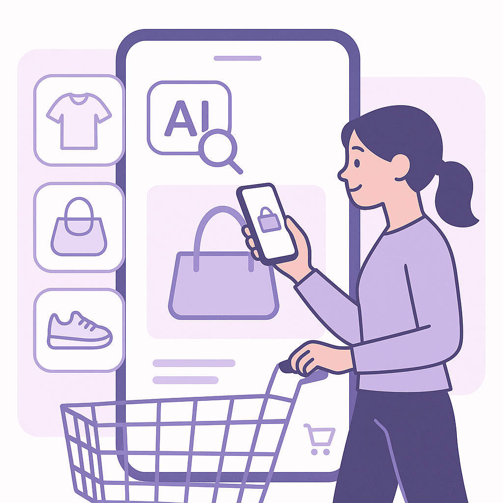
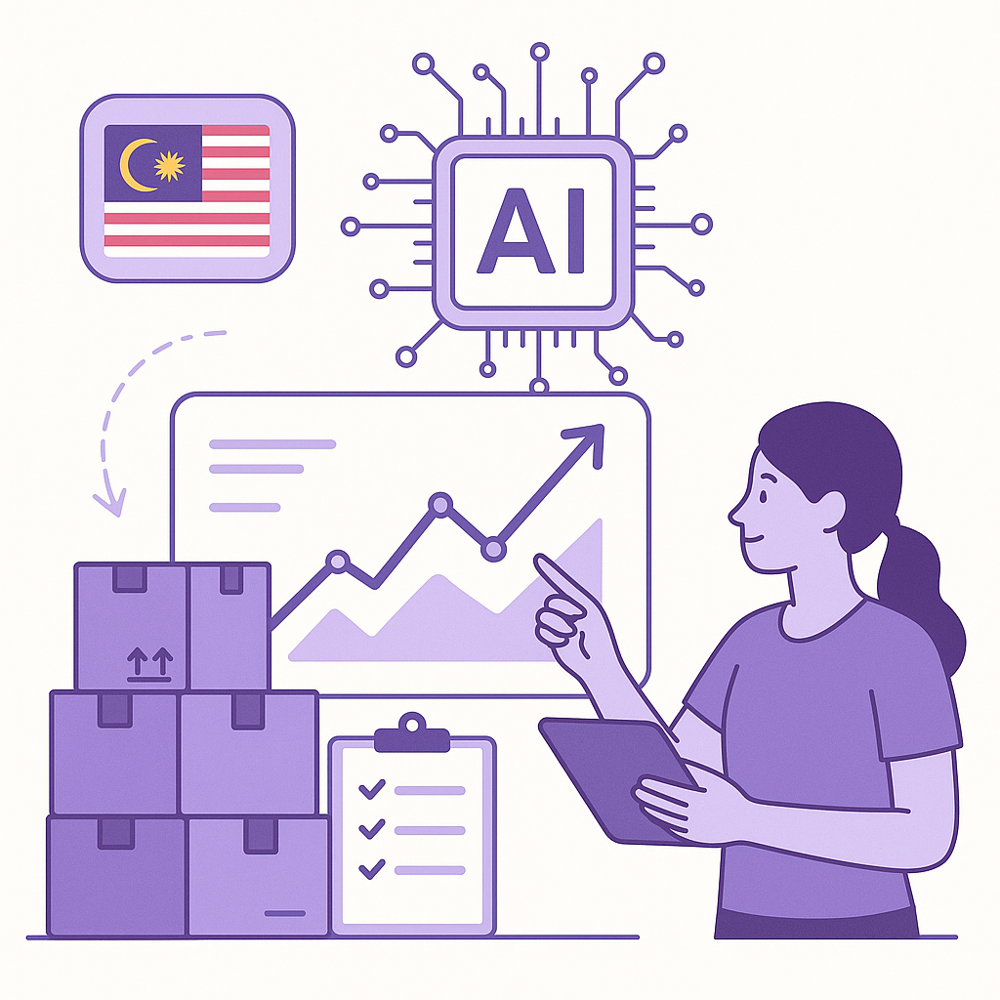

Publishing Recommendation
publishThe drafted posts and comments are well-aligned with current trends and the Purands AI brand voice, offering practical insights into AI's integration in various sectors. Each piece focuses on specific applications of AI, with a clear mechanism and potential outcomes, avoiding unsupported claims or hyperbole. The content is ready for publication, maintaining an informative and conversational tone that encourages thoughtful engagement.
LinkedIn Posts (8)
1. Amazon pilots ad services in ChatGPT ★ Purands solution · high priority
CTA: How do you see AI reshaping your customer engagement strategies?
{kind=link}
Image prompt · flat-vector
Caption: AI-driven customer engagement in action.
Alternative hooks
- Amazon just changed the game with ads in ChatGPT.
- Conversational commerce is evolving fast with Amazon's latest move.
- What happens when you mix ads with AI-driven chat? Amazon's testing it now.
Research behind this post (sources, summaries & confidence)
Amazon pilots ad services in ChatGPT conf 0.80 · Retention marketing
Amazon's integration of ad services into ChatGPT represents a new frontier for conversational commerce and customer engagement. This development is highly relevant for retention marketers looking to leverage AI-driven interactions for personalized marketing.
Sources & what I took from each
- Integration of advertising in conversational AI: Amazon's pilot of ad services within ChatGPT is confirmed by several industry reports. ↗ read source
- Potential for personalized customer engagement: This integration allows for more targeted advertising based on user interaction data. ↗ read source
Recent news
- https://www.retaildive.com/news/amazon-pilots-ad-services-chatgpt-what-marketers-need-to-know/830068/
Original trend links
Risks / caveats
- Privacy concerns over data usage
- Potential for user pushback against intrusive ads
2. Target introduces AI-powered photo search and review features ★ Purands solution · high priority
CTA: How do you see AI transforming your customer interactions?

⬇ Download image{kind=link}
Image prompt · flat-vector
Caption: AI enhances personalized shopping experiences.
Alternative hooks
- Can a photo change your shopping experience?
- Ever found a product just by snapping a photo?
- AI in retail: more than just a buzzword now.
Research behind this post (sources, summaries & confidence)
Target introduces AI-powered photo search and review features conf 0.80 · CRM and customer engagement
Target's AI-powered features for photo search and reviews enhance customer experience by providing personalized and seamless shopping experiences, crucial for increasing engagement and retention.
Sources & what I took from each
- Enhancement of customer experience with AI: The AI-powered photo search enhances the shopping experience by allowing users to find products using images. ↗ read source
- Integration of AI in retail operations: Target has integrated these AI features into its operations to improve customer interaction and satisfaction. ↗ read source
Recent news
- https://www.retaildive.com/news/target-introduces-ai-powered-photo-search-review-features/830041/
Original trend links
Risks / caveats
- Potential privacy issues with image processing
- Need for continual AI updates to maintain accuracy
3. AWS introduces Pizza Bot for AI agents ★ Purands solution · high priority
CTA: How do you see open-source AI tools impacting your business operations?
{kind=link}
Image prompt · flat-vector
Caption: AI agents in action with AWS's Pizza Bot.
Alternative hooks
- AWS's Pizza Bot is making waves in AI integration.
- Ever wondered how open-source AI tools can enhance business workflows?
- Can AWS's new Pizza Bot elevate AI-driven customer engagement?
Research behind this post (sources, summaries & confidence)
AWS introduces Pizza Bot for AI agents conf 0.70 · AI in business
AWS's open-source Pizza Bot for AI agents offers a new tool for businesses looking to integrate AI into their workflows, potentially enhancing customer engagement and operational efficiency.
Sources & what I took from each
- Open-source AI integration tools: AWS has developed Pizza Bot as an open-source tool to facilitate AI integration. ↗ read source
- Focus on operational efficiency: The tool is designed to streamline AI operations and improve efficiency. ↗ read source
Recent news
- https://www.marktechpost.com/2026/09/13/aws-introduces-pizza-bot-an-open-source-inbox-for-background-ai-agents/
Original trend links
Risks / caveats
- Potential security vulnerabilities in open-source software
- Need for technical expertise to implement effectively
4. JD.com expands AI in logistics with 3 million robots
CTA: How do you see AI transforming logistics in the next decade?
Caption: JD.com's AI-driven logistics efficiency.
Alternative hooks
- Imagine 3 million robots working tirelessly in logistics.
- JD.com is redefining logistics with 3 million robots.
- What happens when AI meets logistics on a massive scale?
Research behind this post (sources, summaries & confidence)
JD.com expands AI in logistics with 3 million robots conf 0.85 · AI in business
JD.com's significant investment in AI and robotics for logistics underscores the growing trend of AI-driven efficiency in supply chains, which can impact product availability and delivery in APAC markets, affecting customer satisfaction and retention.
Sources & what I took from each
- Large-scale AI and robotics deployment: JD.com has deployed a vast number of robots, enhancing logistics operations significantly. ↗ read source
- Focus on logistics and supply chain efficiency: The initiative is aimed at improving efficiency across JD.com's supply chains. ↗ read source
Recent news
- https://www.artificialintelligence-news.com/news/jd-com-physical-ai-logistics-3-million-robots/
Original trend links
Risks / caveats
- Job displacement due to automation
- High initial investment costs
5. Microsoft AI’s MAI-Transcribe-2 undercuts competitors on price and speed
CTA: How are you integrating AI tools like MAI-Transcribe-2 into your business?
Caption: Competitive edge of MAI-Transcribe-2.
Alternative hooks
- Microsoft's MAI-Transcribe-2 is changing the game in speech recognition.
- How Microsoft is reshaping AI pricing with MAI-Transcribe-2.
- Efficiency meets affordability with Microsoft's MAI-Transcribe-2.
Research behind this post (sources, summaries & confidence)
Microsoft AI’s MAI-Transcribe-2 undercuts competitors on price and speed conf 0.85 · AI in business
Microsoft's competitive pricing and speed in speech recognition can reduce costs for businesses utilizing AI for customer interaction, thereby improving efficiency and potentially enhancing retention strategies.
Sources & what I took from each
- Cost-effective AI solutions: Microsoft's MAI-Transcribe-2 offers lower costs and faster performance compared to competitors. ↗ read source
- Competitive edge in AI technology: The technology provides Microsoft with a significant competitive advantage in the AI market. ↗ read source
Recent news
- https://venturebeat.com/infrastructure/microsoft-ais-mai-transcribe-2-undercuts-openai-google-and-elevenlabs-on-price-and-speed
Original trend links
Risks / caveats
- Potential quality trade-offs for cost savings
- Pressure on competitors to lower their prices
6. Coca-Cola uses AI to improve retailer ordering in Malaysia
CTA: Have you seen AI in action in supply chains? Share your experience.

⬇ Download image{kind=link}
Image prompt · flat-vector
Caption: AI optimizes retailer ordering in Malaysia.
Alternative hooks
- What's Coca-Cola doing in Malaysia that could change retail?
- AI isn't just a buzzword for Coca-Cola in Malaysia.
- How Coca-Cola is using AI to keep shelves stocked in Malaysia.
Research behind this post (sources, summaries & confidence)
Coca-Cola uses AI to improve retailer ordering in Malaysia conf 0.80 · AI in business
Coca-Cola's use of AI to optimize product orders in Malaysia highlights the application of AI in improving supply chain and inventory management, crucial for maintaining product availability and customer satisfaction in APAC.
Sources & what I took from each
- AI optimization in retail ordering: Coca-Cola has implemented AI systems to enhance ordering efficiencies in Malaysia. ↗ read source
- Focus on APAC market operations: The initiative is part of Coca-Cola's broader strategy to improve operations in the APAC region. ↗ read source
Recent news
- https://www.artificialintelligence-news.com/news/coca-cola-ai-retailer-ordering-malaysia/
Original trend links
Risks / caveats
- Dependence on AI systems subject to technical failures
- Initial resistance from retailers adapting to new technologies
7. Anthropic's 'Pace the Frontier' plan gains support from major tech figures
CTA: How do you see ethical standards impacting AI's role in your field?
{kind=link}
Image prompt · flat-vector
Caption: Ethical AI development gains momentum.
Alternative hooks
- Big tech players are slowing down AI to speed up trust.
- Ethical AI is taking center stage, thanks to Anthropic.
- Why are Musk, Altman, and Nadella backing a slower AI future?
Research behind this post (sources, summaries & confidence)
Anthropic's 'Pace the Frontier' plan gains support from major tech figures conf 0.75 · AI industry
The AI industry's move to slow down development in favor of safety and ethics is a major shift that could affect the speed and nature of AI advancements used in marketing. Ensuring ethical AI use is crucial for customer trust and retention.
Sources & what I took from each
- Support from Elon Musk, Sam Altman, Satya Nadella: Public statements and endorsements from these figures have been documented in recent reports. ↗ read source
- Focus on ethical AI development: The 'Pace the Frontier' plan is specifically designed to address ethical concerns in AI development. ↗ read source
Recent news
- https://www.marktechpost.com/2026/09/13/anthropics-3-step-pace-the-frontier-plan-wins-openai-xai-and-microsoft-support-is-it-too-late-to-slow-ai-down/
Original trend links
Risks / caveats
- Potential slowdown in AI innovation
- Resistance from stakeholders focused on rapid development
8. Anthropic, OpenAI, and Google discuss creating an industry-led standards body for AI
CTA: What are your thoughts on industry-led standards for AI? Are they enough?
{kind=link}
Image prompt · flat-vector
Caption: Industry-led AI standards initiative.
Alternative hooks
- When three giants like Anthropic, OpenAI, and Google sit down to talk, the industry listens.
- AI standards could soon have a new architect: the industry itself.
- Can self-regulation be the key to trustworthy AI development?
Research behind this post (sources, summaries & confidence)
Anthropic, OpenAI, and Google discuss creating an industry-led standards body for AI conf 0.70 · AI industry
With major AI companies collaborating on an industry-led standards body, this marks a significant step towards self-regulation and establishing guidelines for responsible AI development. This is crucial for retention marketing as it ensures AI tools remain trustworthy and effective.
Sources & what I took from each
- Collaboration among top AI companies: Multiple reports indicate ongoing discussions among Anthropic, OpenAI, and Google about forming a standards body. ↗ read source
- Focus on self-regulation and industry standards: The dialogue among these companies includes a push for self-regulation within the AI industry. ↗ read source
Recent news
- https://www.techmeme.com/260913/p12#a260913p12
Original trend links
Risks / caveats
- Potential for biased standards favoring large companies
- Lack of enforceability without governmental oversight
Today's Trends
| # | Trend | Category | Why it matters |
|---|---|---|---|
| 1 | Anthropic, OpenAI, and Google discuss creating an industry-led standards body for AI
source |
AI industry | With major AI companies collaborating on an industry-led standards body, this marks a significant step towards self-regulation and establishing guidelines for responsible AI development. This is crucial for retention marketing as it ensures AI tools remain trustworthy and effective. |
| 2 | Amazon pilots ad services in ChatGPT
source |
Retention marketing | Amazon's integration of ad services into ChatGPT represents a new frontier for conversational commerce and customer engagement. This development is highly relevant for retention marketers looking to leverage AI-driven interactions for personalized marketing. |
| 3 | Anthropic's 'Pace the Frontier' plan gains support from major tech figures
source |
AI industry | The AI industry's move to slow down development in favor of safety and ethics is a major shift that could affect the speed and nature of AI advancements used in marketing. Ensuring ethical AI use is crucial for customer trust and retention. |
| 4 | JD.com expands AI in logistics with 3 million robots
source |
AI in business | JD.com's significant investment in AI and robotics for logistics underscores the growing trend of AI-driven efficiency in supply chains, which can impact product availability and delivery in APAC markets, affecting customer satisfaction and retention. |
| 5 | Coca-Cola uses AI to improve retailer ordering in Malaysia
source |
AI in business | Coca-Cola's use of AI to optimize product orders in Malaysia highlights the application of AI in improving supply chain and inventory management, crucial for maintaining product availability and customer satisfaction in APAC. |
| 6 | AWS introduces Pizza Bot for AI agents
source |
AI in business | AWS's open-source Pizza Bot for AI agents offers a new tool for businesses looking to integrate AI into their workflows, potentially enhancing customer engagement and operational efficiency. |
| 7 | Microsoft AI’s MAI-Transcribe-2 undercuts competitors on price and speed
source |
AI in business | Microsoft's competitive pricing and speed in speech recognition can reduce costs for businesses utilizing AI for customer interaction, thereby improving efficiency and potentially enhancing retention strategies. |
| 8 | Target introduces AI-powered photo search and review features
source |
CRM and customer engagement | Target's AI-powered features for photo search and reviews enhance customer experience by providing personalized and seamless shopping experiences, crucial for increasing engagement and retention. |
Risk Assessment
No risks flagged.
Suggested LinkedIn Comments (30)
Open each post, then paste the copied comment. Nothing is posted automatically.
1. insight · rss:techcrunch.com — Insight Partners' Devin Parekh opens up about losing Legora to General Catalyst,
Post by: rss:techcrunch.com
Why it works: It highlights the value of diversification in investment strategy, reinforcing Parekh's approach as wise amid industry volatility.
↗ Open LinkedIn post to paste comment2. opinion · rss:techcrunch.com — Oracle had previously disclosed that Ellison planned to sell 50 million shares w
Post by: rss:techcrunch.com
Why it works: The comment provides a perspective on the implications of a major shareholder's actions, offering thought on market perception.
↗ Open LinkedIn post to paste comment3. expansion · rss:techcrunch.com — From floating reactors to brain chips: VCs picked their favorite YC startups fro
Post by: rss:techcrunch.com
Why it works: It broadens the discussion from just selecting favorites to the potential impact of diverse innovations across industries.
↗ Open LinkedIn post to paste comment4. respectful challenge · rss:techcrunch.com — On Equity, we discussed the AI industry's latest debate about whether it poses a
Post by: rss:techcrunch.com
Why it works: It refocuses the debate on practical ethics, encouraging a balanced view over sensationalism.
↗ Open LinkedIn post to paste comment5. insight · rss:techcrunch.com — Obama recently said that Democrats need to make artificial intelligence one of t
Post by: rss:techcrunch.com
Why it works: The comment underscores the necessity of political engagement in tech policy, aligning with the post's theme of proactive governance.
↗ Open LinkedIn post to paste comment6. opinion · rss:techcrunch.com — Welcome back to TechCrunch Mobility, your hub for the future of transportation,
Post by: rss:techcrunch.com
Why it works: This comment emphasizes practical application over hype, aligning with a pragmatic view of AI's role in transportation.
↗ Open LinkedIn post to paste comment7. insight · rss:techcrunch.com — Fusion startups are inking defense-related deals, reigniting the relationship be
Post by: rss:techcrunch.com
Why it works: It acknowledges both the potential and the risks, providing a balanced view on the intersection of fusion tech and security.
↗ Open LinkedIn post to paste comment8. opinion · rss:techcrunch.com — Automattic says Mullenweg is back as "chairman and CEO of Automattic, with full
Post by: rss:techcrunch.com
Why it works: It emphasizes the value of leadership stability and continuity, resonating with the company's strategic needs.
↗ Open LinkedIn post to paste comment9. insight · rss:techcrunch.com — While OpenAI has filed confidentially for an IPO, the company will not be going
Post by: rss:techcrunch.com
Why it works: The comment interprets the delay as a strategic decision, providing a positive spin on the company's timing.
↗ Open LinkedIn post to paste comment10. expansion · rss:techcrunch.com — Anthropic's Dario Amodei and OpenAI's Sam Altman seem to agree that it's time to
Post by: rss:techcrunch.com
Why it works: It adds specifics on what pacing the frontier might entail, offering a constructive direction for the AI industry.
↗ Open LinkedIn post to paste comment11. insight · rss:www.theverge.com — Yesterday, Anthropic CEO Dario Amodei published a lengthy open letter saying it
Post by: rss:www.theverge.com
Why it works: The comment acknowledges the significance of industry leaders agreeing on the need for careful AI development, providing a real-world perspective on the issue.
↗ Open LinkedIn post to paste comment12. opinion · rss:www.theverge.com — Bloomberg's Mark Gurman says Apple is developing two game controllers for the iP
Post by: rss:www.theverge.com
Why it works: It offers a perspective on how Apple's entry could impact the gaming industry, aligning with the company's strengths.
↗ Open LinkedIn post to paste comment13. insight · rss:www.theverge.com — The Units are a band I discovered in part thanks to No Dogs in Space. During the
Post by: rss:www.theverge.com
Why it works: The comment draws a parallel between music innovation and broader creative processes, adding depth to the post's cultural reference.
↗ Open LinkedIn post to paste comment14. insight · rss:www.theverge.com — Two people were arrested in San Fransico while riding around in a Waymo robotaxi
Post by: rss:www.theverge.com
Why it works: It highlights the practical challenges of autonomous vehicles, linking the incident to broader issues of safety and trust.
↗ Open LinkedIn post to paste comment15. insight · rss:www.theverge.com — Marvel's mishandling of its Blade reboot will likely go down as one of the studi
Post by: rss:www.theverge.com
Why it works: The comment expands on the post's theme by focusing on leadership and vision, providing a broader lesson for the industry.
↗ Open LinkedIn post to paste comment16. opinion · rss:www.theverge.com — This is The Stepback, a weekly newsletter breaking down one essential story from
Post by: rss:www.theverge.com
Why it works: It reinforces the importance of staying informed on tech's broader impact, aligning with the newsletter's purpose.
↗ Open LinkedIn post to paste comment17. insight · rss:www.theverge.com — Hi, friends! Welcome to Installer No. 143, your guide to the best and Verge-iest
Post by: rss:www.theverge.com
Why it works: It emphasizes the necessity of keeping pace with tech changes, adding value to the post's theme of new tech exploration.
↗ Open LinkedIn post to paste comment18. insight · rss:www.theverge.com — In May, hundreds of malicious and spam packages were uploaded to RubyGems, causi
Post by: rss:www.theverge.com
Why it works: The comment discusses the cybersecurity implications of AI, adding depth to the post's focus on the RubyGems incident.
↗ Open LinkedIn post to paste comment19. opinion · rss:www.theverge.com — OpenAI CEO Sam Altman confirmed that there would be no OpenAI IPO in 2026 during
Post by: rss:www.theverge.com
Why it works: It provides a strategic perspective on Altman's decision, emphasizing long-term planning over immediate financial incentives.
↗ Open LinkedIn post to paste comment20. insight · rss:www.theverge.com — Blizzard originally tried to bring the StarCraft universe to the world of 3D sho
Post by: rss:www.theverge.com
Why it works: The comment links Blizzard's strategy to both nostalgia and innovation, offering a balanced view of the franchise's revival.
↗ Open LinkedIn post to paste comment21. respectful challenge · rss:feeds.arstechnica.com — The 40-year-old unvaccinated woman reportedly had underlying health conditions.
Post by: rss:feeds.arstechnica.com
Why it works: The comment points out the need for broader context, encouraging a more comprehensive view on health discussions.
↗ Open LinkedIn post to paste comment22. insight · rss:feeds.arstechnica.com — The manufacturer has a service that lets owners repair their own equipment.
Post by: rss:feeds.arstechnica.com
Why it works: It highlights the benefits of right-to-repair initiatives, which align with consumer empowerment and sustainability.
↗ Open LinkedIn post to paste comment23. expansion · rss:feeds.arstechnica.com — Unitree might be the world’s most important robotics company.
Post by: rss:feeds.arstechnica.com
Why it works: The comment adds depth by considering the broader impact of making robotics more accessible.
↗ Open LinkedIn post to paste comment24. insight · rss:feeds.arstechnica.com — "Dedicated launch is pretty essential for us for most of our missions."
Post by: rss:feeds.arstechnica.com
Why it works: It supports the post's claim with a clear rationale, reinforcing the necessity of dedicated launches.
↗ Open LinkedIn post to paste comment25. insight · rss:feeds.arstechnica.com — Simple games gain rich strategies in the face of noise.
Post by: rss:feeds.arstechnica.com
Why it works: The comment connects game theory with AI training, offering a practical perspective on the post's topic.
↗ Open LinkedIn post to paste comment26. insight · rss:feeds.arstechnica.com — The strain lurking in the inflatable structure was hypervirulent.
Post by: rss:feeds.arstechnica.com
Why it works: It emphasizes the importance of evolving safety measures, which is crucial for public health.
↗ Open LinkedIn post to paste comment27. opinion · rss:feeds.arstechnica.com — The Department of Energy declared an "emergency" when none existed.
Post by: rss:feeds.arstechnica.com
Why it works: The comment highlights the potential consequences of miscommunication, reinforcing the need for integrity.
↗ Open LinkedIn post to paste comment28. insight · rss:feeds.arstechnica.com — "I didn't know that AI could hallucinate facts," New Mexico defense lawyer says.
Post by: rss:feeds.arstechnica.com
Why it works: It underscores the importance of ensuring AI accuracy, relevant to the post's legal context.
↗ Open LinkedIn post to paste comment29. expansion · rss:feeds.arstechnica.com — Analysis revealed seed proteins from sesame and moringa, which held religious an
Post by: rss:feeds.arstechnica.com
Why it works: It connects scientific analysis to broader cultural insights, enhancing the post's narrative.
↗ Open LinkedIn post to paste comment30. opinion · rss:feeds.arstechnica.com — Renewables pledge won’t change the Oracle and OpenAI data center’s use of gas.
Post by: rss:feeds.arstechnica.com
Why it works: The comment critiques superficial sustainability efforts, urging for deeper action, which resonates with environmental priorities.
↗ Open LinkedIn post to paste comment